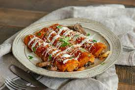

Enchiladas

Enchiladas are a delicious and popular Mexican dish known for their flavorful and comforting appeal. Typically made with rolled tortillas filled with various ingredients such as seasoned meat, beans, cheese, and sometimes vegetables, enchiladas are then smothered in a savory chili sauce and baked until bubbling and golden. The dish is often garnished with toppings like sour cream, guacamole, and chopped cilantro, adding layers of taste and texture. Enchiladas showcase the rich culinary traditions of Mexico, offering a satisfying combination of spicy, savory, and cheesy elements that make them a favorite among food enthusiasts worldwide.
Ingredients List
- 2 cups shredded cooked chicken
- 1 cup black beans, drained and rinsed
- 1 cup corn kernels
- 1 cup shredded cheddar cheese
- 1/2 cup diced onions
- 1/2 cup chopped fresh cilantro
- 1 teaspoon ground cumin
- 1 teaspoon chili powder
- 1/2 teaspoon garlic powder
- Salt and pepper to taste
- 8 large flour tortillas
- 2 cups enchilada sauce
- 1 cup shredded Monterey Jack cheese (for topping)
- Optional toppings: sour cream, guacamole, chopped green onions
Instructions
- Preheat the oven to 375°F (190°C).
- In a large bowl, combine the shredded chicken, black beans, corn, cheddar cheese, onions, cilantro, cumin, chili powder, garlic powder, salt, and pepper. Mix well.
- Warm the tortillas in the microwave for about 20 seconds or until pliable.
- Spoon a generous portion of the chicken mixture onto each tortilla, roll them up tightly, and place them seam side down in a baking dish.
- Pour the enchilada sauce evenly over the rolled tortillas, ensuring they are well-covered.
- Sprinkle the Monterey Jack cheese over the top.
- Bake in the preheated oven for 20-25 minutes or until the cheese is melted and bubbly.
- Remove from the oven and let it cool for a few minutes before serving.
- Garnish with optional toppings like sour cream, guacamole, and chopped green onions.
Main Page